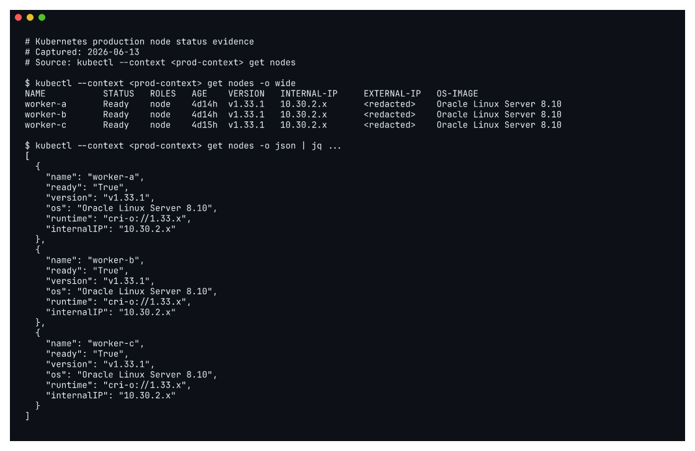

1. OKE production GitOps 구조
1 운영 기준 환경
mintcocoa-ops의 현재 기준은 OKE production입니다. home k3s는 staging, 개발, 내부 도구, 복구 훈련에 사용할 수 있지만 production workload가 home lab availability에 의존하지 않도록 분리했습니다.
이 분리는 단순한 이름 구분이 아닙니다. Argo CD root application, cluster application, workload overlay가 manager, staging, prod 경계를 따라 나뉘어 있습니다. production 상태는 GitOps manager의 Argo CD가 원격 OKE cluster에 수렴시키고, staging은 home k3s에서 먼저 검증하는 대상으로 유지합니다.
| 경계 | 역할 |
|---|---|
bootstrap/manager-root.yaml |
GitOps manager management plane root |
bootstrap/staging-root.yaml |
home k3s staging root |
bootstrap/prod-root.yaml |
OKE production root |
clusters/manager |
manager private ingress와 control plane application |
clusters/staging |
staging child applications |
clusters/prod |
production group root applications |
apps/<app>/base |
환경 공통 workload 정의 |
apps/<app>/overlays/staging |
home k3s staging용 차이 |
apps/<app>/overlays/prod |
OKE production용 차이 |
아래 캡처는 production OKE cluster의 worker node 상태를 kubectl로 확인한 결과입니다. 공개 문서에서는 node private/public IP와 세부 식별자를 마스킹하지만, 3개 worker node가 모두 Ready이고 Kubernetes v1.33.1로 동작한다는 운영 상태는 남깁니다.

2 Application 계층
OKE production의 cluster root는 역할별 group root application을 먼저 참조합니다. clusters/prod/root-applications 아래에서 platform, ingress, observability, workloads를 나누고, 각 group root가 자기 영역의 child application을 관리합니다.
| Application | 관리 대상 |
|---|---|
prod-platform-root |
cert-manager, cluster-issuers, metrics-server, argo-rollouts |
prod-ingress-root |
public ingress-nginx, private private-ingress-nginx |
prod-observability-root |
Prometheus/Grafana, Loki, Promtail, Tempo, datasource, private Grafana ingress |
prod-workloads-root |
prod-services namespace, docs, dropapp, whoami, pipeline-demo |
3 desired state가 두 저장소로 나뉘는 이유
애플리케이션 저장소는 이미지를 만들고, 운영 저장소는 어떤 이미지가 어떤 환경에 배포되는지를 기록합니다. mintcocoa-docs 저장소는 _site를 렌더링하고 GHCR 이미지를 만들지만, OKE production에서 그 이미지를 쓰는 최종 선언은 mintcocoa-ops/apps/mintcocoa-docs/overlays/prod/kustomization.yaml에 남습니다.
이 구조에서는 배포된 이미지 tag가 Git commit SHA와 연결됩니다. 문제가 생기면 production manifest에서 image tag를 확인하고, 해당 tag가 어떤 문서 저장소 commit에서 만들어졌는지 되짚을 수 있습니다.
mintcocoa-docs push
-> render _site
-> build ghcr.io/mint-cocoa/mintcocoa-docs:<sha>
-> update mintcocoa-ops apps/mintcocoa-docs/overlays/prod
-> Argo CD sync prod-mintcocoa-docs4 공개 문서에서 마스킹한 값
mintcocoa-ops 문서에는 운영자가 확인하기 위한 endpoint와 network 값이 일부 남아 있습니다. 공개 포트폴리오에서는 값 자체보다 경계를 설명하는 것이 목적이므로 아래 값은 원문 그대로 노출하지 않습니다.
| 값 종류 | 공개 문서 처리 |
|---|---|
| Kubernetes API IP | private/public endpoint 역할만 설명 |
| private subnet IP | IPSec, GitOps manager, private ingress 경계만 설명 |
| OCID | 사용하지 않음 |
| token, kubeconfig, Secret value | 사용하지 않음 |
| 도메인, 앱 이름, 커밋 해시 | 검증 식별자로 사용 |
5 확인 명령
git -C /home/cocoa/mintcocoa-ops show HEAD:README.md
find /home/cocoa/mintcocoa-ops/apps /home/cocoa/mintcocoa-ops/clusters /home/cocoa/mintcocoa-ops/infrastructure -maxdepth 3 -type f
git -C /home/cocoa/mintcocoa-ops show HEAD:clusters/prod/kustomization.yaml
kubectl --context <prod-context> get nodes -o wide